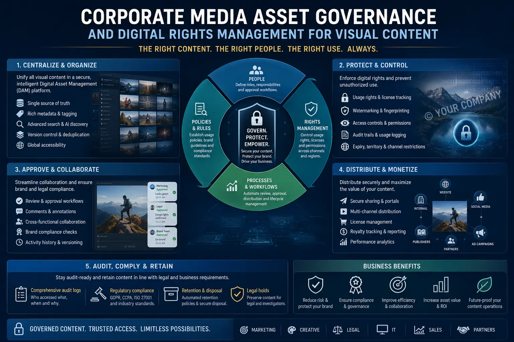
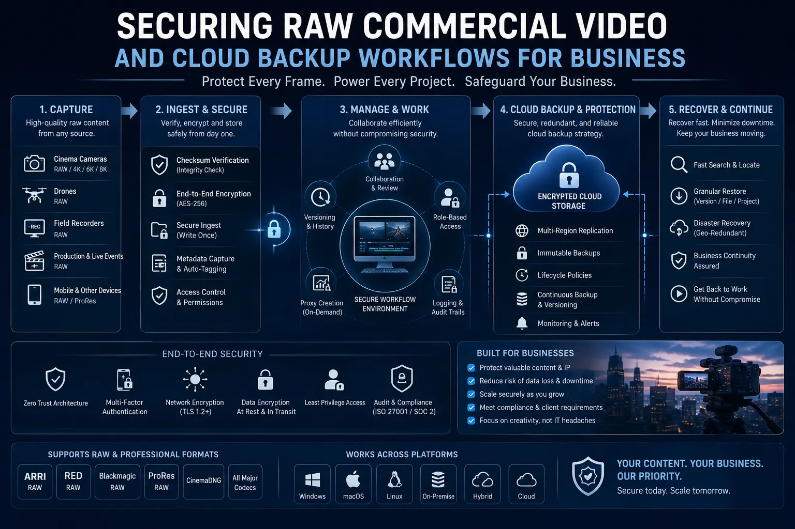

Structuring Corporate Media Governance to Protect and Store Millions of 4K RAW Files
The Hidden Crisis in Corporate Media Libraries
Every organisation that invests in professional photography and videography — product shoots, corporate events, brand campaigns, executive communications, training videos — is accumulating a media library that grows by terabytes each year. A single 4K RAW video shoot can produce 500GB-2TB of footage. A year of active production across marketing, HR, communications, and product teams can generate 50-200TB of visual assets. Within three to five years, enterprises are sitting on petabyte-scale media libraries — and most of them have no systematic governance framework for protecting, organising, or managing these assets.
The consequences of ungoverned media accumulation are severe and compounding: critical footage is lost when employee laptops fail or when departing staff take drives with them; duplicate files consume expensive storage without adding value; legal rights to visual content are unclear because contracts lacked proper assignment clauses; brand assets are used without authorisation by former agencies or contractors; and compliance teams cannot verify that model releases, location permits, and usage rights exist for content being published.
Corporate Media Asset Governance is the systematic discipline of establishing policies, technologies, and workflows that ensure every visual asset produced by or for the organisation is properly stored, legally secured, rights-documented, access-controlled, and retrievable for the duration of its commercial lifespan. It is not a technology project — it is an operational framework that spans legal, IT, marketing, and production functions.
The Storage Architecture: Tiered Systems for Active and Archived Media
The foundation of effective raw video storage protocols is a tiered storage architecture that balances performance, cost, and accessibility across the lifecycle of each media file:
- Tier 1 — Active Production Storage (Hot). High-performance NAS or SAN storage with SSD or fast HDD arrays, connected via 10GbE or Thunderbolt to editing workstations. This tier holds files currently in production — footage being edited, images being retouched, projects in active post-production. Capacity is typically 20-50TB, with RAID 6 or RAID 10 redundancy for protection against drive failure.
- Tier 2 — Near-Line Archive (Warm). Larger-capacity NAS or server storage with high-density HDD arrays, accessible over the network but not directly connected to editing systems. Completed projects are migrated to this tier after delivery, with full folder structures and metadata preserved. Capacity ranges from 100TB to multiple petabytes depending on organisational production volume.
- Tier 3 — Cloud Archive (Cold). Cloud object storage (AWS S3 Glacier, Google Cloud Archive, Azure Cool Blob) for long-term retention of RAW files that are unlikely to be accessed regularly but must be preserved for legal, compliance, or future re-use purposes. Cloud backup workflows for business should automate the migration of completed projects to this tier using lifecycle policies that move files from warm to cold storage after a defined inactivity period — typically 90-180 days.
- Offsite disaster recovery copy. Maintain at least one complete copy of the entire media library in a geographically separate location — either a second cloud region or an offsite physical storage facility. This protects against catastrophic loss from fire, flood, theft, or ransomware attacks that could compromise both primary and secondary on-premises storage.
Legal Protection
Implementing Digital Rights Management for Visual Content ensures every asset has documented ownership, usage rights, and access controls — protecting the organisation from unauthorised use and legal disputes.
Secure RAW Archives
Securing Raw Commercial Video through encrypted storage, role-based access, and audit logging prevents unauthorised access to high-value production footage and brand assets.
Copyright Compliance
Understanding photography intellectual property laws and embedding copyright documentation into production workflows ensures the organisation owns and can legally enforce rights to all commissioned visual content.
Regulatory Readiness
Establishing media production compliance frameworks — model releases, location permits, usage tracking — ensures the organisation can demonstrate legal authority to publish every visual asset.

Digital Rights and Intellectual Property: The Legal Framework
The legal dimension of Corporate Media Asset Governance is frequently the most neglected — and the most consequential. Without proper legal documentation, an organisation may not legally own the visual content it paid to produce. Photography intellectual property laws and copyrighting brand visuals require systematic attention at every stage of the production lifecycle:
- Copyright assignment in production contracts. Every contract with a photographer, videographer, or production agency must include an explicit clause assigning copyright ownership of all deliverables — including RAW files, outtakes, and intermediate edits — to the commissioning organisation. Without this clause, the creator retains copyright by default under most jurisdictions, including India's Copyright Act 1957.
- Model and property releases. Maintain signed model releases for every identifiable person appearing in visual content, and property releases for every privately owned location featured. These releases should specify the scope of permitted use (commercial, editorial, social media, internal), the duration (perpetual or time-limited), and the territories covered.
- Copyright registration for high-value assets. Register the most commercially valuable visual assets — hero campaign images, brand videos, signature photography — with the Copyright Office to establish a public record of ownership that strengthens enforcement in case of infringement. Copyrighting brand visuals provides enhanced legal remedies including statutory damages and attorney's fee recovery.
- Usage rights tracking and documentation. Maintain a centralised register that documents the usage rights, restrictions, and expiration dates for every visual asset — particularly those created by external agencies or photographers where usage may be limited by contract. This register is the operational core of Digital Rights Management for Visual Content.
The Digital Asset Management Platform
At scale, corporate digital asset management requires a dedicated DAM platform — a centralised software system that stores, organises, tags, controls access to, and distributes visual media assets across the organisation. The DAM platform is the operational hub of the governance framework:
Organisation and Metadata
- Implement a consistent folder taxonomy: Year → Project → Asset Type (RAW, Edits, Finals, Documents) → Sub-categories.
- Apply standardised metadata to every asset: project name, client, production date, photographer/videographer, copyright holder, usage rights, expiry date, and keywords.
- Use AI-powered auto-tagging to supplement manual metadata — identifying subjects, objects, colours, and compositions automatically.
- Maintain version control so that every edit, crop, and export is linked to its source RAW file with a clear audit trail.
Access Control and Security
- Implement role-based access controls (RBAC) — marketing teams access final deliverables; production teams access RAW files; legal teams access rights documentation; external partners access only shared collections.
- Enable watermarking for preview versions distributed outside the organisation — protecting assets from unauthorised use during review and approval cycles.
- Maintain audit logs that record every access, download, and share action for every asset — supporting compliance reviews and security investigations.
- Implement two-factor authentication and IP-restricted access for administrative functions and RAW file downloads.
Distribution and Compliance
- Create branded portals where approved teams can search, preview, and download approved assets in predefined formats and resolutions.
- Enforce usage rights at the point of download — preventing users from accessing assets whose rights have expired or whose usage scope does not cover the intended application.
- Generate compliance reports that document which assets are currently in use, where they are published, and whether their rights documentation is complete and current.
- Integrate with production management tools to ensure new assets are ingested into the DAM immediately upon delivery, with metadata and rights documentation attached.
Building Production Compliance into Every Shoot
Media production compliance cannot be applied retroactively — it must be embedded into the production workflow from the moment a shoot is commissioned. Every production brief should include a compliance checklist that covers copyright assignment, model releases, location permits, brand guidelines adherence, and deliverable specifications. Every production wrap should include a compliance handover that transfers all legal documents, metadata records, and RAW files into the governance system before the production is marked as complete.
By treating compliance as a production task rather than a post-production afterthought, organisations build media libraries where every asset is legally clean, properly documented, and governance-ready from the moment it enters the system — eliminating the costly, time-consuming retroactive compliance work that accumulates when governance is deferred.

Conclusion
Corporate Media Asset Governance is not an IT project — it is an operational discipline that protects one of the organisation's most valuable and most vulnerable asset classes. By implementing structured raw video storage protocols, comprehensive Digital Rights Management for Visual Content, and systematic corporate digital asset management, organisations can protect, organise, and maximise the value of media libraries that grow by terabytes each year.
The legal framework — photography intellectual property laws, copyrighting brand visuals, and contractual copyright assignment — ensures the organisation owns what it paid to produce. The technical framework — tiered storage, Cloud backup workflows for business, and Securing Raw Commercial Video through encryption and access controls — ensures that assets are protected against loss, theft, and unauthorised use. And the operational framework — media production compliance embedded into every shoot — ensures that governance is built into production rather than applied after the fact.
At The PhD Ads, we help Indian enterprises build complete media governance systems — from corporate digital asset management platform selection and configuration through legal documentation frameworks to Cloud backup workflows for business and ongoing compliance management.
Key Topics
Protect Your Media Library with Proper Governance
At The PhD Ads, we build media governance frameworks for Indian enterprises — digital asset management, rights documentation, storage architecture, and compliance systems that protect millions of visual assets.
Email: team@e2o.in